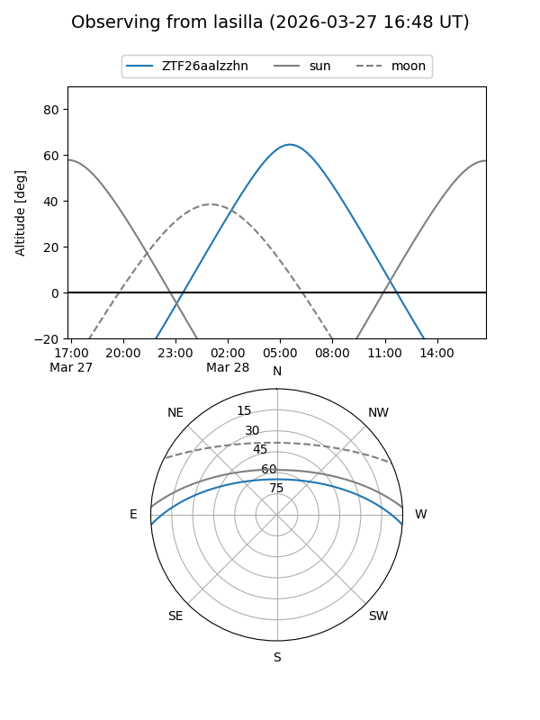
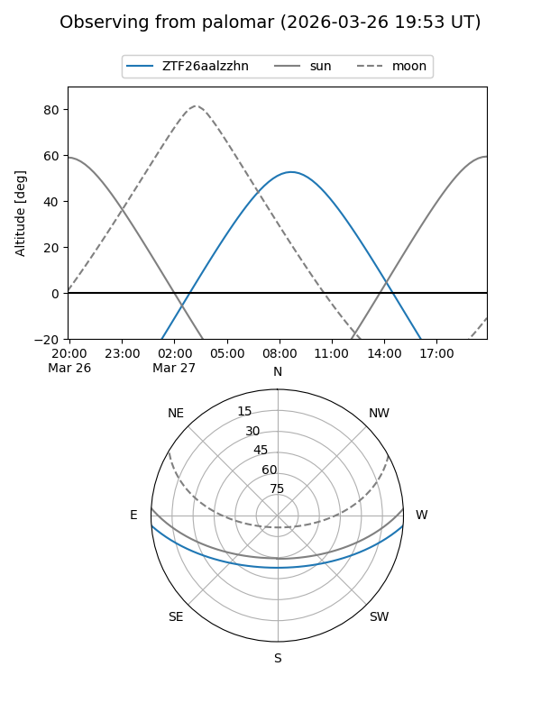

ZTF26aalzzhn
Target ZTF26aalzzhn at 2026-03-27 10:18
Aliases and brokers:
FINK: link
Lasair: link
ALeRCE: link
alt names
ZTF26aalzzhn (ztf,fink_ztf)
Coordinates:
equatorial (ra, dec) = 197.9182,-3.75625
equatorial (HMS+DMS) = 13:11:40.38,-03:45:22.51
galactic (l, b) = (312.6917,+58.73152)
Flags:
Photometry:
last ztfg=16.52
1 ztfg detections
Lightcurve
Visibility


Additional plots